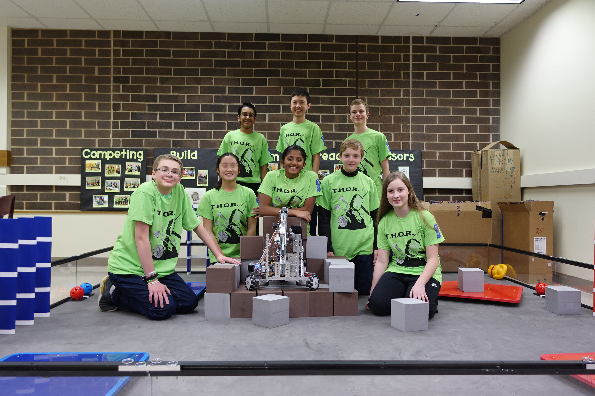
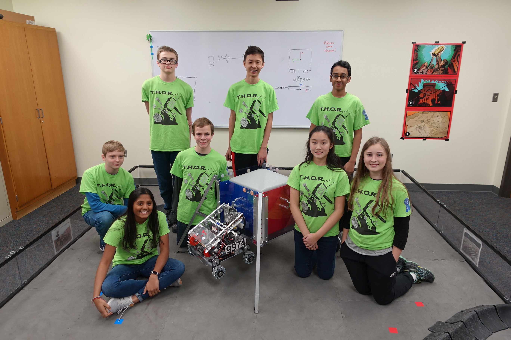

Our Competitive Seasons
We have been an active FTC team since the 2015-2016 season. What follows is a summary of every season we have competed in.
FIRST Velocity Vortex (2016-2017)

FIRST Velocity Vortex was our second season. It was the first year we made it to the state level of competition. At the state championships, we were invited to be on an alliance in elimination rounds.
More about this seasonGame Animation
FIRST Relic Recovery (2017-2018)
FIRST Relic Recovery was our third season. We made it to the state competition again, but did not advance. We chose to enter the World Championships wildcard. We were selected to go to Worlds.
More about this seasonGame Animation
FIRST Rover Ruckus (2018-2019)
FIRST Rover Ruckus is our fourth and current sesaon. This season, we advanced to the World Championships by merit, rather than by wildcard.
More about this seasonGame Animation